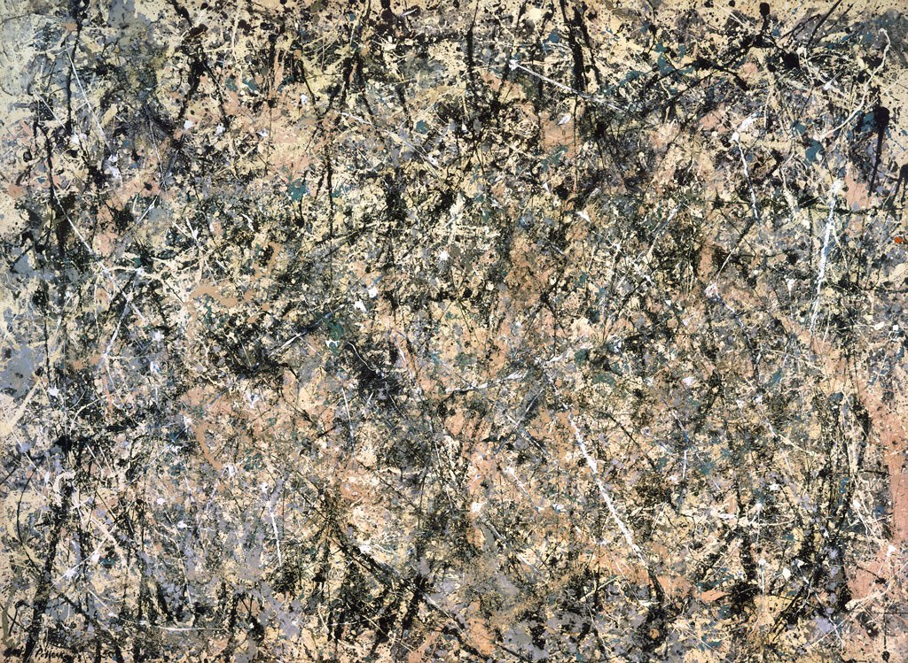

Kunst
Kunst:
Tijdens de koude oorlog werd er vooral kunst gemaakt door de Verenigde Staten, dit was voornamelijk moderne kunst. Deze moderne kunst werd door de V.S. voornamelijk gebruikt als medium voor propaganda en dan vooral als middel tegen de ideologie in Rusland. Moderne kunst en met name abstracte kunst stond namelijk voor de ultieme vrijheid, deze vrijheid was er wel in het Westen maar in het Oosten waar de abstractie werd onderdrukt omdat dit haaks stond op het totalitaire systeem, was deze vrijheid er dus niet.
Aan het begin van de koude oorlog, toen de scheiding tussen West- en Oost- Duitsland ontstond, had West-Europa in de ogen van Amerika vooral de functie om als buffer te dienen tegen het communisme uit het Oosten. De Westerse kunst werd een goed middel om de grenslijn van vrijheid te markeren. Er kwam allerlei zelfbewuste kunst van schilders zoals: Barnett Newman, Jackson Pollock, Mark Rothko en Willem de Kooning die vooral abstract-expressionistische schilderijen schilderden. Deze schilderijen lieten niet alleen de emotie van de schilder zien maar ook een metafoor voor de wereld, de vrije wereld. Door deze kunst werd het duidelijk dat Amerika de toekomst had.
Mark Rothko

Jackson Pollock
De kunst werd door de Amerikaanse overheid gesteund, dit was niet gebruikelijk, in landen zoals Nederland steunde de overheid de kunst niet. Het New Deal programma van Roosevelt omvatte deze steunmaatregelingen voor kunstenaars. Na de oorlog viel de directe overheidssteun weg, veel particulieren bleven de kunstenaars financieel wel steunen uit ideologische redenen. Ook de CIA hielp met de bevordering van de Amerikaanse kunst in het buitenland.
Berlijn was natuurlijk het centrum van de koude oorlog, ook was dit het decor van de kunst in die tijd. Dit kan je in nu nog steeds een beetje terugzien.
Muziek:
Ook de Amerikaanse muziek werd beïnvloed door de koude oorlog, met name de genres jazz en volksmuziek. Een van de beroemdste artiest in die tijd, Bob Dylan liet zijn muziek ook beïnvloeden door de koude oorlog met bijvoorbeeld nummers als: Masters of War.
Later in de jaren 80 kwamen er door de stijgende spanningen tussen Amerika en de Sovjet Unie die Reagan en Thatcher veroorzaakte steeds meer protest nummers. In nummers kwam ook steeds meer de angst voor een 3de wereldoorlog naar boven, zoals in een nummer (“Russians”) van Sting waarin hij zingt dat hij zich niet aansluit bij Reagan (die Europa wil redden) en Khrushchev (die het westen wil verwoesten), “I don’t subscribe to his point of view.” Ook steeds meer punk rock bands richtte zich negatief tegenover de politiek (Reagan, Thatcher).